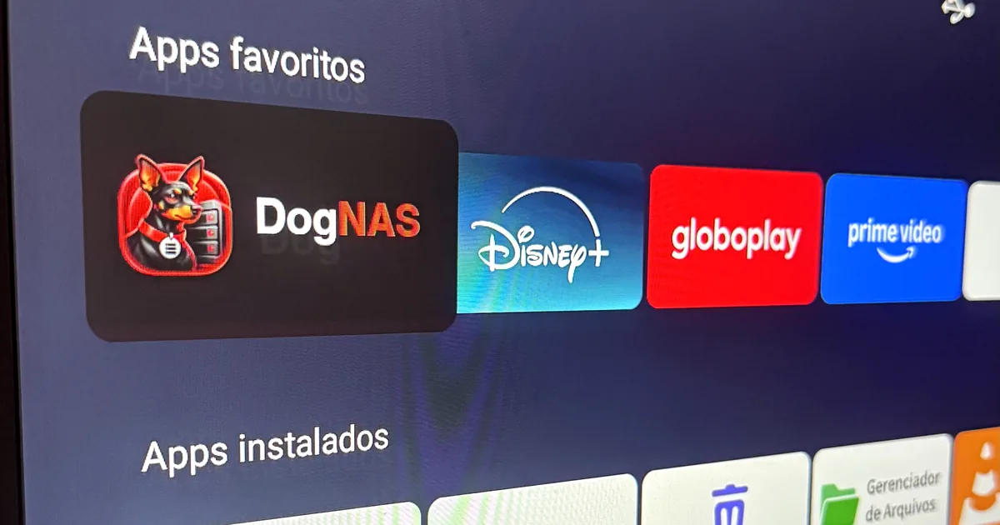
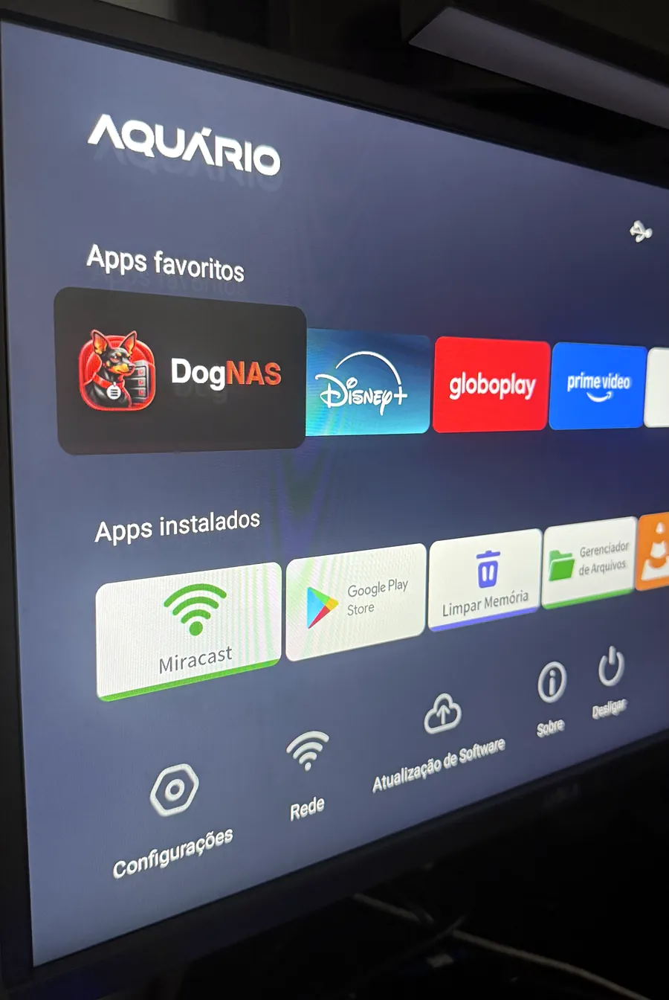
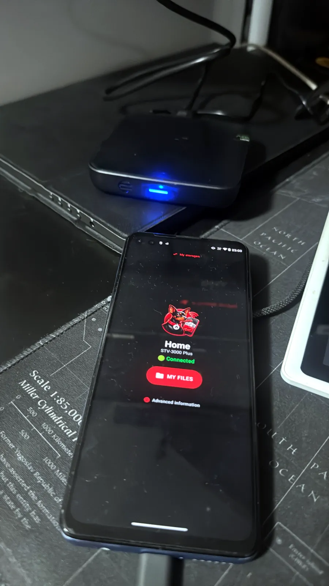
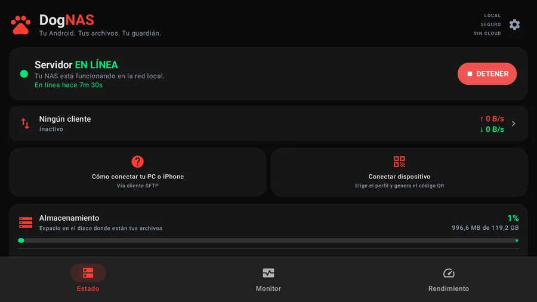
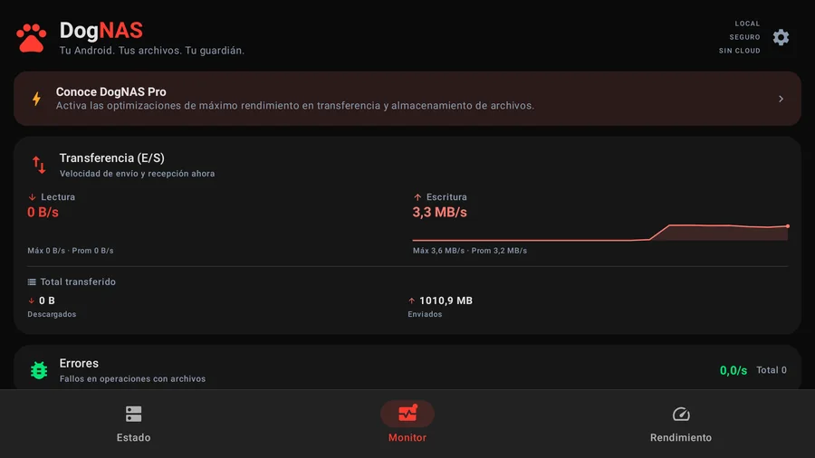
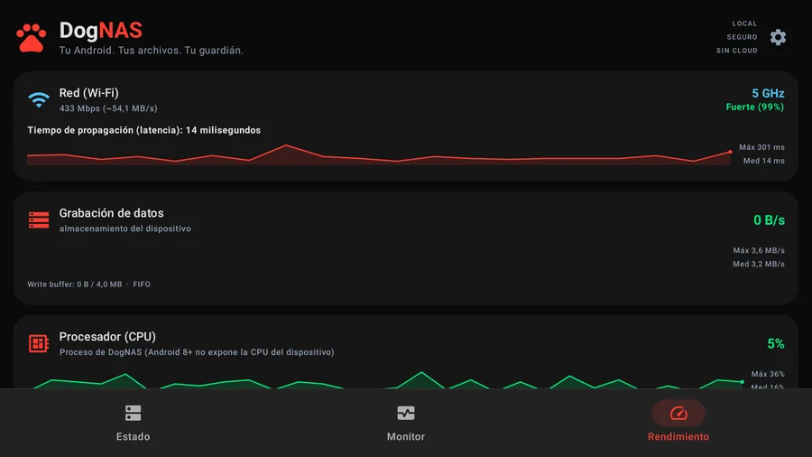

TV box Android como NAS casero: qué funciona y qué esperar (probamos una)
Probado en: Aquário STV-3000 Plus (TV box) · Android 11 · 2026-11-01

En este artículo
Sí, una TV box Android puede funcionar como servidor de archivos del hogar, con algunos límites que explicamos abajo. Es un pequeño ordenador siempre encendido que ya está junto a la tele y al router, con Wi-Fi (muchas también puerto de red) y puerto USB, y desde DogNAS 1.1.6 la app servidor está preparada para funcionar en una.
Esta guía sale de una prueba real, no de la ficha técnica: ejecutamos DogNAS en una Aquário STV-3000 Plus (Android 11, 2 GB de memoria) y la usamos desde dos móviles y un ordenador. Dice qué funcionó, qué no y qué no pudimos probar.
Qué necesitas
- Una TV box Android con Android 7.0 o posterior y algo de espacio libre, o un disco USB (un disco duro o SSD en una base, como el disco de un portátil viejo, o un pendrive).
- La box conectada a tu red doméstica. El Wi-Fi funciona; si tu box tiene puerto de red, el cable es la opción más estable (no lo probamos).
- Un móvil para emparejar, para leer el código QR que muestra la tele.
- La app DogNAS en la box. Viene de Google Play, así que la box necesita la Play Store. Las boxes sin ella pueden ser un problema: no probamos instalar la app por otros medios.
Configúrala en unos pasos
- Instala DogNAS desde la Play Store en la box y ábrelo desde la fila "Apps" del menú de la tele.
- Elige dónde guardar los archivos. El asistente del primer uso pregunta dónde debe estar la carpeta "DogNAS". Muchas TV boxes no tienen selector de carpetas del sistema, así que DogNAS muestra uno propio: el almacenamiento interno de la box o, si hay uno conectado, el disco USB.
- Inicia el servidor y elige un PIN de 4 dígitos para el perfil Home. El teclado en pantalla de la tele sirve para el PIN.
- Empareja un móvil. La tele muestra un código QR. En el móvil abre DogNAS Client Lite o DogNAS Client, toca "Añadir DogNAS", apunta la cámara a la tele y escribe el mismo PIN.
- Opcional: dale una dirección fija a la box en el router o en los ajustes de Wi-Fi de la propia box. Es una buena práctica, no un requisito: las apps DogNAS vuelven a encontrar la box solas si cambia su dirección (la buscan en la red por su nombre). En nuestra prueba la box recibió otra dirección tras reiniciar: DogNAS Client la encontró sola y el Lite también, tras la actualización 1.0.6. Una dirección fija sigue ayudando en routers que bloquean este tipo de búsqueda.


Lo que muestra el servidor en la tele
Las pantallas de DogNAS están pensadas para la tele: texto grande, un contorno de foco para el mando y las mismas tres pestañas que en el móvil. Son las pantallas reales mientras un ordenador copiaba archivos a la box.



Qué medimos
| Aspecto | Resultado en nuestra prueba |
|---|---|
| Box | Aquário STV-3000 Plus, Android 11, 2 GB de RAM |
| Red | Wi-Fi 5 GHz, enlace de unos 200 a 290 Mbps |
| Ordenador a la box (SFTP, 200 MB) | unos 3,3 MB/s subiendo y 3,1 MB/s bajando |
| Móvil a la box (200 MB) | unos 1,2 a 1,4 MB/s subiendo |
| Almacenamiento interno frente a disco USB | misma velocidad (el disco no era el límite) |
| Archivos tras la copia | comprobados byte a byte: idénticos |
Como referencia, un móvil moderno en un buen router puede ser varias veces más rápido. El procesador de la box tiene que cifrar cada transferencia, por eso una box barata se queda en unos pocos MB/s. Si lo que quieres es guardar copias y abrir documentos, está bien; copiar un vídeo grande tarda minutos, no segundos.
Qué saber antes de depender de ella
- Tras reiniciar, el servidor no arranca solo en el plan Gratis. Abre DogNAS y pulsa Iniciar. El plan Pro puede arrancar el servidor solo cuando se enciende la box.
- El plan Pro se compra por Google Play. Una box sin Google Play no puede comprarlo y se queda en el plan Gratis.
- El mando basta, pero no es rápido. La app muestra un contorno de foco y se mueve con las flechas; probamos las flechas, pero no todos los modelos de mando. Escribir en el teclado en pantalla es más lento que en un móvil, y el botón Atrás sale de la app, como en cualquier app de tele.
- Trátala como un rincón tranquilo de tu red. DogNAS es para el Wi-Fi de casa: nada sale de tu red y no hay nube.
¿Funciona en cualquier TV box Android?
Necesita Android 7.0 o posterior y, en la práctica, Google Play. Probamos una box; otros modelos pueden ser distintos, sobre todo en el comportamiento en espera y en la velocidad del Wi-Fi.
¿Puedo usar un disco duro USB con ella?
Sí. En nuestra prueba un disco USB conectado a la box apareció en el asistente del primer uso y funcionó a la misma velocidad que el almacenamiento interno. Un disco que pide más energía de la que da el puerto USB de la box puede no arrancar, así que una base con alimentación propia es más segura.
¿Es lo bastante rápida para ver vídeos desde ella?
Para uso doméstico es aceptable. La velocidad depende de las especificaciones de tu aparato, así que recomendamos evaluarlas (móvil, TV box o tableta): el procesador, el Wi-Fi y el almacenamiento deciden la rapidez. En nuestra prueba medimos unos pocos MB/s; los vídeos muy grandes o de alta calidad tardan más en copiarse y quizá convenga copiarlos al aparato donde los ves.
¿Hay que pagar?
No para empezar. El plan Gratis guarda hasta 64 GB de archivos, con el perfil Home y dos perfiles más. Pro es una compra única en Google Play: quita el límite de 64 GB y deja que el servidor arranque solo cuando se enciende la box.
Merece la pena
Si ya tienes una TV box parada en un cajón, es una forma sin coste de guardar los archivos de casa en un solo sitio, sin nube. Si vas a comprar un aparato para esto, un móvil o tableta antiguos con mejor procesador suelen ser más rápidos. Compara con las otras opciones en reutilizar un Android antiguo y en una tableta antigua como almacenamiento del hogar.